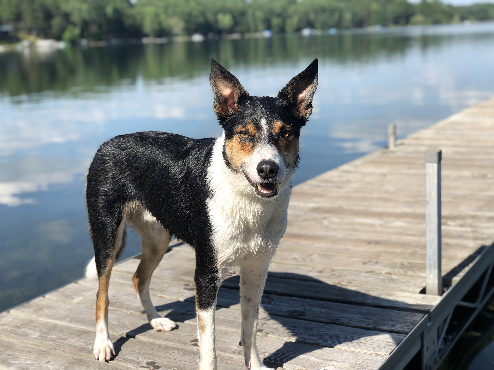

Travel
Oliver rode to the lake in the vehicle setup we already used for the dogs. The trip itself was part of the recovery challenge because several hours in the car had to be followed by safe unloading, settling, and outdoor movement.
RETURNING TO NORMAL LIFE
Oliver's lake trip was the first time recovery stopped feeling like a controlled routine inside the house and started looking more like his real life again. The trip gave me useful evidence about what he could handle, but it did not turn a recovering dog into a fully cleared dog.
This page describes Oliver's personal experience at approximately five weeks after surgery. It is not guidance about travel, swimming, retrieving, uneven ground, or activity progression. Those decisions belong with your own veterinarian or surgeon.
THE MOST IMPORTANT LESSON
I did not want Oliver's entire summer to become recovery pen, leash, bathroom break, repeat. I also did not want one exciting weekend to undo the work his body was still doing.
The answer was not to choose between complete restriction and complete freedom. It was to separate the parts of lake life he could still participate in from the parts that created the greatest risk.
That distinction made the trip possible. Oliver did not have to lose every part of the lake simply because one favorite activity remained off limits.
JULY 10–13, 2026
The trip combined several things that were easier to control separately at home: a three-and-a-half-hour drive, outdoor living, family activity, uneven ground, water access, retrieving drive, excitement, and Oliver's long-standing obsession with jumping from the dock.
Over several days, he walked, played, visited, and moved around much more than he had during our tightly managed routine at home. I later estimated that the general activity added up to a few miles.
He handled that larger life without an obvious setback. That did not prove he was fully healed, but it challenged my belief that he still needed to be protected from nearly every ordinary movement.
THE DOCK WAS THE NONNEGOTIABLE
Oliver loves jumping from the dock. During the trip, he repeatedly returned to it whenever someone was getting ready to throw.
I called him back to the beach and made sure no one threw for him from the dock. Everyone respected that rule.
That cooperation mattered more than expecting Oliver to suddenly stop wanting one of his favorite activities. He was enthusiastic, familiar with the routine, and surrounded by the exact cues that normally ended with a jump.
The safest decision was to change what the people were doing. We moved the throwing to the beach instead of relying on Oliver to make the safer choice while excited.

WHY THE DOCK MATTERED SO MUCH
The dock had been part of Oliver's lake routine for years. He knew what happened there, loved jumping from it, and returned to it repeatedly when someone prepared to throw.
That history is why the boundary had to be simple and consistent. The safest plan was not to expect him to forget a deeply established habit while excited.
This photo predates both TPLO recoveries. It is included to show the normal life and familiar activity we were trying to preserve without allowing the highest-risk movement too soon.
WHAT “NORMAL” LOOKED LIKE
Oliver rode to the lake in the vehicle setup we already used for the dogs. The trip itself was part of the recovery challenge because several hours in the car had to be followed by safe unloading, settling, and outdoor movement.
He was with the family instead of being left behind because recovery was inconvenient.
Inclusion mattered, but it still required supervision and limits.
Oliver participated from the beach rather than the dock.
The activity was modified instead of removed completely.
Walking, visiting, and moving around the property created more activity than a carefully measured neighborhood walk.
That gave me useful information, but it also made exact tracking harder.
A successful trip was not only about what Oliver did. It was also about whether he could settle, recover between activities, and avoid obvious deterioration afterward.
The trip felt normal because Oliver could participate. It remained a recovery trip because some choices were still removed from him.
WHAT THE TRIP DID NOT PROVE
Oliver's ability to move through several active days showed that he had real-world capacity. It did not establish that the bone was fully healed or that every activity was medically appropriate.
The current record does not conclusively establish how much swimming occurred, whether swimming had been formally cleared, how long any water sessions lasted, whether a life jacket was used, or how Oliver entered and exited the water each time.
I am not turning incomplete details into a swimming recommendation. The verified lesson is narrower: dock jumping was prevented, beach-based retrieving was allowed in this experience, and the trip increased my confidence in Oliver's mobility.
THE LIFE WE WERE TRYING TO PRESERVE
The July trip mattered because it was not a random destination chosen for rehabilitation. It was a place Oliver already knew and loved.
Returning there helped me see how much of his normal life could come back in modified form, even while some activities remained restricted.
This photograph was taken on June 28, 2025, before the 2026 left-leg injury and TPLO.

THE TRIP CHANGED WHAT HAPPENED NEXT
On July 16, approximately six weeks after surgery, I let Oliver walk on our regular walk instead of putting him in the stroller.
The lake had shown me that he was ready for more than I had been permitting. He had moved through several active days without the collapse or obvious setback I had feared.
I also believed the trip had improved Oliver's confidence in his body. Just as importantly, it improved mine.
That did not mean I stopped paying attention or removed every restriction. It meant the focus was beginning to shift from protecting the repair at all costs toward rebuilding strength and normal function.
THE OWNER'S PART OF RETURNING TO NORMAL
My caution had a purpose. Oliver had undergone major orthopedic surgery, and I did not want one bad decision to cause a setback.
But there came a point when the dog in front of me was showing more ability than the routine I had built around him allowed.
The lake trip helped me recognize that difference. Oliver did not need me to stop caring about risk. He needed me to update my understanding as his recovery changed.
Returning to normal life required rehabilitation for both of us: strength and confidence for Oliver, and judgment and trust for me.
WHAT I WOULD DO AGAIN
I would still take Oliver to the lake if the medical plan, weather, travel setup, and environment made the trip reasonable.
I would still ask everyone to throw from the beach, keep dock jumping completely off limits, and allow Oliver to participate rather than removing him from the experience.
I would still let several days of real observation inform my confidence while refusing to confuse that confidence with formal clearance.
WHAT I WOULD DOCUMENT BETTER
Better documentation would not have made the trip safer by itself. It would have made the lesson easier to verify and more useful later.
WHAT THIS PAGE CANNOT ANSWER
Oliver's temperament, prior athletic history, body size, surgical course, lake routine, family support, and recovery stage were specific to him.
This page cannot tell another owner when to travel, swim, retrieve, walk farther, or stop using a stroller. It can show one way to think about the transition: keep the dog included, remove the highest-risk choices, observe the full response, and let new evidence change your understanding without overstating what it proves.
THE NEXT QUESTION
Oliver's diagnosis did not begin with one dramatic moment. It began with small changes at home, uncertainty about what they meant, and videos that preserved what he did not always show at the clinic.